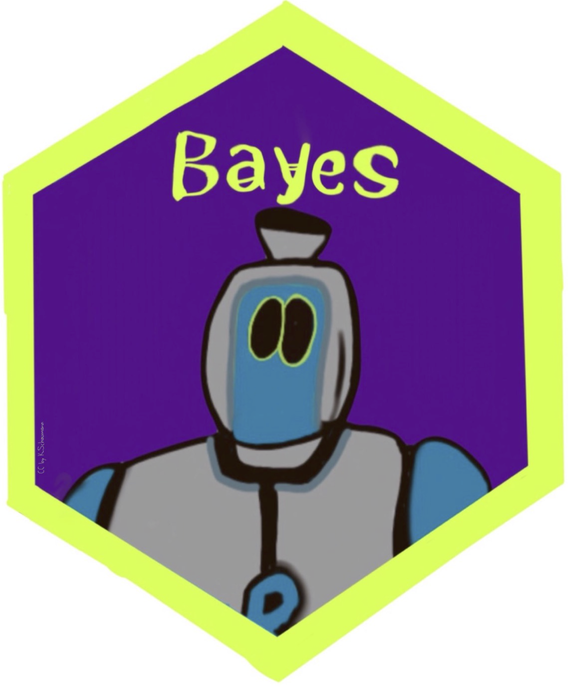
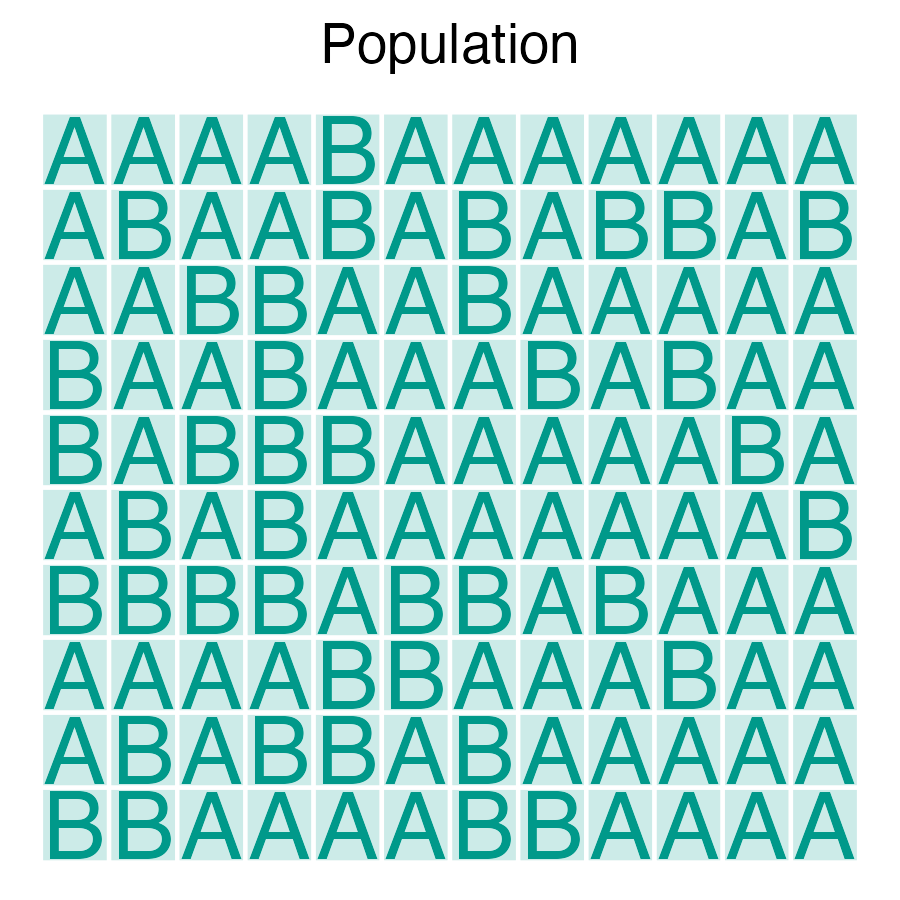
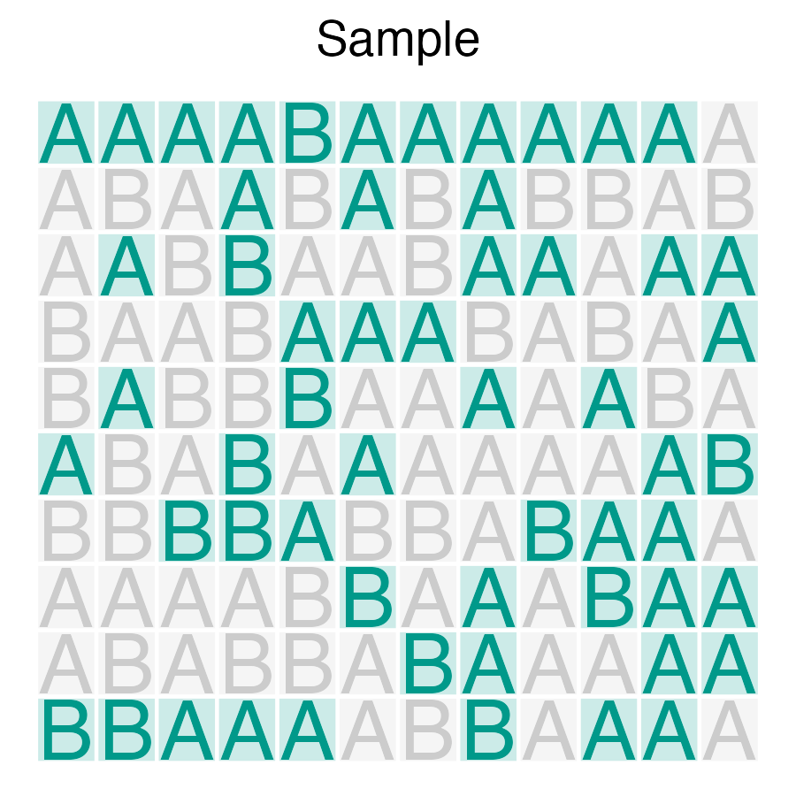
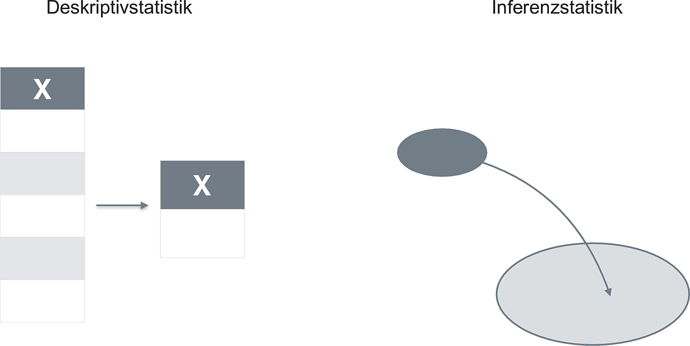
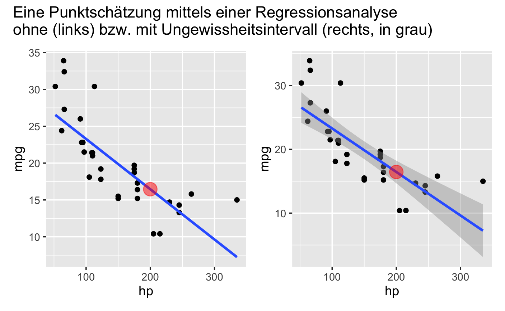
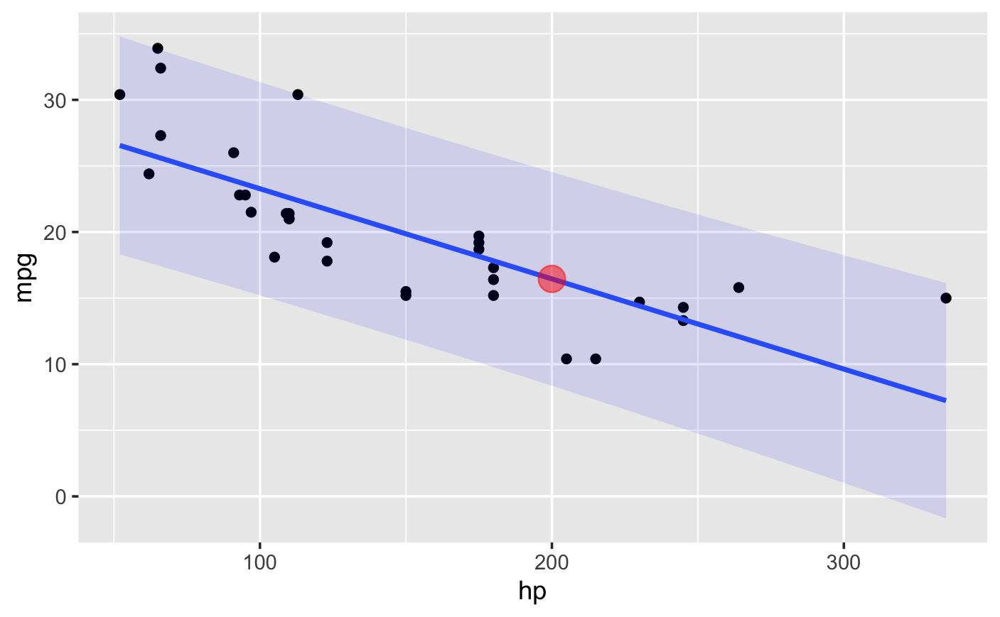
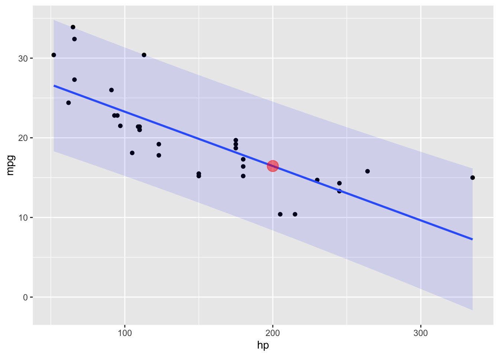

2 Inferenz

2.1 Lernsteuerung
2.1.1 Lernziele
Nach Absolvieren des jeweiligen Kapitels sollen folgende Lernziele erreicht sein.
Sie können …
- die Definition von Inferenzstatistik sowie Beispiele für inferenzstatistische Fragestellungen nennen
- zentrale Begriffe nennen und in Grundzügen erklären
- den Nutzen von Inferenzstatistik nennen
- erläutern, in welchem Zusammenhang Ungewissheit zur Inferenzstatistik steht
- auch anhand von Beispielen erklären, was ein statistisches Modell ist
- die Grundkonzepte der Regression angeben
- Unterschiede zwischen klassischer und Bayes-Inferenz benennen
- Vor- und Nachteile der klassischen vs. Bayes-Inferenz diskutieren
- Die grundlegende Herangehensweise zur Berechnung des p-Werts informell erklären können
2.1.2 Begleitvideos
2.2 Wozu ist Statistik überhaupt da?
Ja, diese Frage haben Sie sich auch schon mal gestellt?
Abb. Abbildung 2.1 gibt einen Überblick über die Ziele der Statistik.
flowchart LR
A{Goals} --> B(describe)
A --> C(predict)
A --> D(explain)
B --> E(distribution)
B --> F(assocation)
B --> G(extrapolation)
C --> H(point estimate)
C --> I(interval)
D --> J(causal inference)
D --> K(population)
D --> L(latent construct)
Ziele existieren nicht “in echt” in der Welt. Wir denken sie uns aus. Ziele haben also keine ontologische Wirklichkeit, sie sind epistemologische Dinge (existieren nur in unserem Kopf). Das heißt, dass man sich nach Beliebem Ziele ausdenken kann. Allerdings hülfe es, wenn man andere Menschen vom Nutzen der eigenen Ideen überzeugen kann.
2.3 Was ist Inferenz?
2.3.1 Inferenz als Generalisieren
Statistische Inferenz sieht sich drei “Herausforderungen” gegenüber, laut Gelman, Hill, und Vehtari (2021), Kap. 1.1. Diese betreffen das Schließen (oder Generalisieren) vom Einzelfall auf das Allgemeine:
- Von der Stichprobe aus die Grundgesamtheit (Population)
- Von der Experimental- auf die Kontrollgruppe (Kausalinferenz)
- Von einem Messwert auf das zugrundeliegende Konstrukt
In diesem Kurs beschäftigen wir uns mit den ersten beiden Herausforderungen.
Statistische Inferenz hat zum Ziel, vom Teil aufs Ganze zu schließen, bzw. vom Konrketen auf das Abstrakte.
2.4 Stichprobe vs. Population
Nehmen wir an, wir möchten herausfinden, wie groß der Anteil der R-Fans an der Population der Studierenden ist. Den Anteil der F-Fans bezeichnen wir der Einfachheit halber hier mit A1.
Das Grundproblem der Inferenzstatistik ist, dass wir an Aussagen zur Grundgesamtheit interessiert sind, aber nur eine Stichprobe, also einen Ausschnitt oder eine Teilmenge der Grundgesamtheit vorliegen haben.
Wir müssen also den Anteil der R-Fans auf Basis des Anteils in der Stichprobe für die Grundgesamtheit schließen: Wir verallgemeinern oder generalisieren von der Stichprobe auf die Grundgesamtheit, s. Abb. Abbildung 2.2.


Häufig ist das praktische Vorgehen recht simpel: Ah, in unserer Stichprobe sind 42% R-Fans!2. Man schreibt: \(p = 0.42\) (p wie proportion). Die Stichprobe sei repräsentativ für die Grundgesamtheit aller Studierender. Messerscharf schließen wir: In der Grundgesamtheit ist der Anteil der R-Fans auch 42%, \(\pi=0.42\).
2.4.1 Deskriptiv- vs. Inferenzstatistik
Statistik gibt es in zwei Geschmacksrichtungen, könnte man sagen: Deskriptiv- und Inferenzstatistik, s. Abb. Abbildung 2.3. Einteilungen in Schubladen existieren nicht auf der Welt, sondern in unserem Kopf: Sie besitzen keine ontologische Realität, sondern eine epistemologische. Sie sind frei, sich andere Einteilungen der Statistik auszudenken. Es hilft allerdings, wenn man andere Menschen vom Wert seiner Idee überzeugen kann.

Deskriptivstastistik fasst Stichprobenmerkmale zu Kennzahlen (Statistiken) zusammen.
Inferenzstatistik schließt von Statistiken auf Parameter (Kennzahlen von Grundgesamtheiten).
🏋 Schließen Sie die Augen und zeichnen Sie obiges Diagramm!
2.4.2 Wozu ist die Inferenstatistik gut?
Definition 2.1 (Inferent) Inferenz bedeutet Schließen; auf Basis von vorliegenden Wissen wird neues Wissen generiert.
Inferenzstatistik ist ein Verfahren, das mathematische Modelle (oft aus der Stochastik) verwendet, um ausgehend von einer bestimmten Datenlage, die eine Stichprobe einer Grundgesamtheit darstellt, allgemeine Schlüsse zu ziehen.
🏋️️ Heute Nacht vor dem Schlafen wiederholen Sie die Definition. Üben Sie jetzt schon mal.
2.4.3 Deskriptiv- und Inferenzstatistik gehen Hand in Hand
Für jede beliebige Statistik (Kennzahl von Stichprobendaten) kann man die Methoden der Inferenzstatistik verwenden, s. Tabelle Tabelle 2.1.
| Kennwert | Stichprobe | Grundgesamtheit |
|---|---|---|
| Mittelwert | \(\bar{X}\) | \(\mu\) |
| Streuung | \(sd\) | \(\sigma\) |
| Anteil | \(p\) | \(\pi\) |
| Korrelation | \(r\) | \(\rho\) |
| Regression | \(b\) | \(\beta\) |
Für Statistiken (Daten einer Stichprobe) verwendet man lateinische Buchstaben; für Parameter (Population) verwendet man griechische Buchstaben.
🏋️ Geben Sie die griechischen Buchstaben für typische Statistiken an!
2.4.4 Schätzen von Parametern einer Grundgesamtheit
Meist begnügt man sich beim Analysieren von Daten nicht mit Aussagen für eine Stichprobe, sondern will auf eine Grundgesamtheit verallgemeinern.
Leider sind die Parameter einer Grundgesamtheit zumeist unbekannt, daher muss man sich mit Schätzungen begnügen.
Schätzwerte werden mit einem “Dach” über dem Kennwert gekennzeichnet, z.B.
| Kennwert | Stichprobe | Grundgesamtheit | Schätzwert |
|---|---|---|---|
| Mittelwert | \(\bar{X}\) | \(\mu\) | \(\hat{\mu}\) |
| Streuung | \(sd\) | \(\sigma\) | \(\hat{\sigma}\) |
| Anteil | \(p\) | \(\pi\) | \(\hat{\pi}\) |
| Korrelation | \(r\) | \(\rho\) | \(\hat{\rho}\) |
| Regression | \(b\) | \(\beta\) | \(\hat{\beta}\) |
2.4.5 Beispiele für inferenzstatistische Fragestellungen
Sie testen zwei Varianten Ihres Webshops (V1 und V2), die sich im Farbschema unterscheiden und ansonsten identisch sind: Hat das Farbschema einen Einfluss auf den Umsatz?
Dazu vergleichen Sie den mittleren Umsatz pro Tag von V1 vs. V2, \(\bar{X}_{V1}\) und \(\bar{X}_{V2}\).
Die Mittelwerte unterscheiden sich etwas, \(\bar{X}_{V1} > \bar{X}_{V2}\)
Sind diese Unterschiede “zufällig” oder “substanziell”? Gilt also \(\mu_{V1} > \mu_{V2}\) oder gilt \(\mu_{V1} \le \mu_{V2}\)?
Wie groß ist die Wahrscheinlichkeit3 \(Pr(\mu_{V1} > \mu_{V2})\)?
🏋️ Predictive Maintenance ist ein Anwendungsfeld inferenzstatistischer Modellierung. Lesen Sie dazu S. 3 dieses Berichts!
2.5 Modellieren
2.5.1 Modellieren als Grundraster des Erkennens
In der Wissenschaft - wie auch oft in der Technik, Wirtschaft oder im Alltag - betrachtet man einen Teil der Welt näher, meist mit dem Ziel, eine Entscheidung zu treffen, was man tun wird oder mit dem Ziel, etwas zu lernen.
Nun ist die Welt ein weites Feld. Jedes Detail zu berücksichtigen ist nicht möglich. Wir müssen die Sache vereinfachen: Alle Informationen ausblenden, die nicht zwingend nötig sind. Aber gleichzeitig die Strukturelemente der wirklichen Welt, die für unsere Fragestellung zentral ist, beibehalten.
Dieses Tun nennt man Modellieren: Man erstellt sich ein Modell.
Ein Modell ist ein vereinfachtes Abbild der Wirklichkeit.
Auf die Statistik bezogen heißt das, dass man einen Datensatz zu zusammenfasst, dass man das Wesentliche erkennt. Was ist das “Wesentliche”? Meist interessiert man sich für die Ursachen eines Phänomens? Etwa: “Wie kommt es bloß, dass ich ohne zu lernen die Klausur so gut bestanden habe?”4 Noch allgemeiner ist vom häufig am Zusammenhang von X und Y interessiert, s. Abbildung 2.4, linker Teil, die ein Sinnbild eines statistischen Modells widergibt.
flowchart LR X --> Y X1 --> Y2 X2 --> Y2
Das Diagramm hat Sie nicht so vom Hocker? Okay, ein statistisches Modell kann natürlich komplexer sein, z.B. wie in Abb. Abbildung 2.4, rechter Teil, dargestellt.
Es hört sich zugspitzt an, aber eigentlich ist fast alles Modellieren: Wenn man den Anteil der R-Fans in einer Gruppe Studierender ausrechnet, macht man sich ein Modell: man vereinfacht diesen Ausschnitt der Wirklichkeit anhand einer statistischen Kennzahl, die das forschungsleitende Interesse zusammenfasst.
2.5.2 Vertiefung
Lesen Sie die Einführung zum Thema Modellieren bei Poldrack (2022) (Kap. 5.1).
Nutzen Sie die Übersetzungsfunktion Ihres Browsers, wenn Sie einen englischen Text lieber auf Deutsch lesen wollen. Oder einen deutschen lieber auf Englisch.
2.6 Regression
Einflussreiche Leute schwören auf die Regressionsanalyse (Abbildung 2.5).

2.6.1 Regression zum Modellieren
Die Regression ist eine Art Schweizer Taschenmessen: Für vieles gut einsetzbar.
Anstelle von vielen verschiedenen Verfahren des statistischen Modellierens kann man (fast) immer die Regression verwenden. Das ist nicht nur einfacher, sondern auch schöner. Wir werden im Folgenden stets die Regression zum Modellieren verwenden.
Dann wenden wir die Methoden der Inferenz auf die Kennzahlen der Regression an.
Regression + Inferenz = 💖
Alternativ zur Regression könnte man sich in den Wald der statistischen Verfahren begeben, wie hier von der Uni Münster als Ausschnitt (!) aufgeführt.
Auf dieser Basis kann man meditieren, welches statistischen Verfahren man für eine bestimmte Fragestellung verwenden sollte, s. Abb. Abbildung 2.6.

2.6.2 Viele statistische Verfahren sind Spezialfälle der Regression
Wie Jonas Kristoffer Lindeløv uns erklärt, sind viele statistische Verfahren, wie der sog. t-Test Spezialfälle der Regression, s. Abb. Abbildung 2.7.

2.6.3 In voller Pracht
Hier ist die Regressionsgleichung in voller Pracht; Abb. Abbildung 2.8.
\[y = \beta_0 + \beta_1 x_1 + \ldots + \beta_k x_k + \epsilon\]
Anhan der Gleichung erkennt man auch, warum man von einem linearen Modell spricht: Y wird als gewichteter Mittelwert mehrerer Summanden berechnet. Dabei wird X nicht mit “fortgeschrittenen” Transformationen wie Quadradieren oder Exponenzieren beglückt, sondern nur mit den Regressiongewichten multipliziert.

2.7 Unsicherheit
2.7.1 Inferenz beinhaltet Unsicherheit
Inferenzstatistische Schlüsse sind mit Unsicherheit behaftet: Schließlich kennt man nur einen Teil (die Stichprobe) eines Ganzen (die Population), möchte aber vom Teil auf das Ganze schließen.
Nichts Genaues weiß man nicht: Schließt man von einem Teil auf das Ganze, so geschieht das unter Unsicherheit. Man spricht von Ungewissheit, da man die Unsicherheit das Wissen über das Ganze betrifft.
Schließt man etwa, dass in einer Grundgesamtheit der Anteil der R-Fans bei 42% liegt, so geschieht das unter Unsicherheit. Man ist sich nicht sicher, dass es wirklich 42% in der Population sind - und nicht etwa etwas mehr oder etwas weniger. Schließlich hat man nicht die ganze Population gesehen bzw. vermessen. Sicher ist man sich hingegen für die Stichprobe (Messfehler einmal ausgeblendet).
Zur Bemessung der Unsicherheit (Ungewissheit) bedient man sich der Wahrscheinlichkeitsrechnung (wo immer möglich).
Die Wahrscheinlichkeitstheorie bzw. -rechnung wird auch als die Mathematik des Zufalls bezeichnet.
Definition 2.2 (Zufälliges Ereignis) Unter einem zufälligen Ereignis (random) verstehen wir ein Ereignis, das nicht (komplett) vorherzusehen ist, wie etwa die Augenzahl Ihres nächsten Würfelwurfs. Zufällig bedeutet nicht (zwangsläufig), dass das Ereignisse keine Ursachen besitzt. So gehorchen die Bewegungen eines Würfels den Gesetzen der Physik, nur sind uns diese oder die genauen Randbedingungen nicht (ausreichend) bekannt.
🏋 Welche physikalischen Randbedingungen wirken wohl auf einen Münzwurf ein?
2.7.2 Beispiele zur Quantifizierung von Ungewissheit
Aussagen mit Unsicherheit können unterschiedlich präzise formuliert sein.
Morgen regnet’s \(\Leftrightarrow\) Morgen wird es hier mehr als 0 mm Niederschlag geben (\(p=97\%\)).
Methode \(A\) ist besser als Methode \(B\) \(\Leftrightarrow\) Mit einer Wahrscheinlichkeit von 57% ist der Mittelwert für Methode \(A\) höher als für Methode \(B\).
Die Maschine fällt demnächst aus \(\Leftrightarrow\) Mit einer Wahrscheinlichkeit von 97% wird die Maschine in den nächsten 1-3 Tagen ausfallen, laut unserem Modell.
Die Investition lohnt sich \(\Leftrightarrow\) Die Investition hat einen Erwartungswert von 42 Euro; mit 90% Wahrscheinlichkeit wird der Gewinn zwischen -10000 und 100 Euro.
🏋 Geben Sie weitere Beispiele an!
2.7.3 Zwei Arten von Ungewissheit
Im Modellieren im Allgemeinen und in Regressionsmodellen im Besonderen lassen sich (mindestens) zwei Arten von Ungewissheiten angeben, s. auch Abb. Abbildung 2.9.
Wie (un)gewiss ist man sich über den Wert des Regressionsgewichts?
Wie (un)gewiss ist man sich über den Wert von Y? Schließlich könnte es ja Einflüsse (X) geben, die man nicht berücksichtigt hat.
flowchart LR X1 -->|Wie stark ist der Einfluss?|B X2 -. Haben wir vielleicht X2 übersehen? .-> B
2.7.4 Ich weiß, was ich nicht weiß: Ungewissheit angeben
Streng genommen ist eine Inferenz aus Angabe der Ungewissheit (Genuaigkeit der Schätzung) wertlos. Angenommen, jemand sagt, dass sie den Anteil der R-Fans (in der Population) auf 42% schätzt, lässt aber offen wie sicher (präzise) die Schätzung ist. Wir wissen also nicht, ob z.B. 2% oder 82% noch erwartbar sind. Oder ob man im Gegenteil mit hoher Sicherheit sagen kann, die Schätzung schließt sogar 41% oder 43% aus.
Eine Inferenz nennt man auch Schätzung. Es sollte immer die Genauigkeit (Ungewissheit) der Schätzung angegeben werden.
Im Rahmen der Regressionsanalyse schlägt sich die Ungewissheit an zwei Stellen nieder:
- zur Lage der Regressionsgeraden (\(\beta_0\), \(\beta_1\))
- zu Einflüssen (X), die unser Modell nicht kennt (\(\epsilon, \sigma\))
2.7.5 Visualisierung von Ungewissheit
Definition 2.3 (Punktschätzer) Gibt man nur einen Punktwert an, wie 42%, als Ergebnis einer Inferenz, spricht man von einem Punktschätzer.
Punktschätzer beinhalten keine Angabe der Schätz(un)genauigkeit, s. Abb. ?fig-punktschaetzer2, links. Rot markiert: Die Punktschätzung von mpg für hp=200.

In Abb. ?fig-punktschaetzer2, rechts, ist die Ungewissheit in den Regressionskoeffizienten visualisiert: Wie sicher sind wir uns zur Stärke des Zusammenhangs von X und Y, vgl. Definition 2.3.
Auch wenn wir uns sicher im Hinblick auf die Regressionsgewichte in Abb. Abbildung 2.10 bliebe eine Restungewissheit: Unsere Schätzungen wären auch dann nicht sicher, nicht fehlerfrei. Das liegt daran, da das Modell nicht alle Einflüsse auf Y berücksichtigt, sondern nur einen, hier als X bezeichnet.
In Abb. Abbildung 2.10 ist nicht nur die Ungewissheit durch die Regressionsgewichte, sondern auch die “Restungewissheit” dargestellt. In diesem Fall spricht man von einem “Vorhersageintervall”, da man nicht nur von “typischen Fällen” auf der Regressiongeraden spricht, sondern für echte Fälle Vorhersagen (Schätzungen) tätigt, wo auch die zweite Art von Ungewissheit relevant ist.


Wie man sieht, wird die Ungewissheit größer, wenn man beide Arten der Ungewissheit berücksichtigt. Das Vorhersage-Intervall berücksichtigt Ungewissheit in \(\beta_0, \beta_1, \epsilon\) bei der Vorhersage von \(\hat{y_i}\).
🏋 Geben Sie ein vergleichbares Beispiel an!
2.7.6 Konfidenzintervall
Wir sehen hier, dass ein “Ungewissheitskorridor” angegeben wird. Entsprechend wird nicht ein Punktschätzer, sondern ein Schätzbereich angegeben. Man spricht auch von einem Konfidenzintervall oder Unsicherheitsbereich5
Definition 2.4 (Konfidenzintervall) Ein Konfidenzintervall (confidence intervall, CI) ist ein Oberbegriff für Schätzbereiche. Die Grenzen eines Konfindenzintervall markieren einen Bereich plausibler Werte für einen Parameter.
Ein Konfidenzintervall wird häufig mit 90% oder 95% Genauigkeit angegeben. Im Kontext der Bayes-Analyse ist das einfach zu interpretieren. Sagen wir, wir finden, dass in einem Modell ein 95%-Konfidenzintervall für den Anteil der R-Fans angegeben wird, dass sich von 40 bis 44 Prozent erstreckt. Dieser Befund lässt sich so interpretieren: “Laut Modell liegt der gesuchte Anteil mit einer Wahrscheinlichkeit von 95% im Bereich von 44 bis 44 Prozentpunkten.”
🏋 Interpretieren Sie den Ungewissheitskorridor!
2.8 Klassische vs. Bayes-Inferenz
2.8.1 Klassische Inferenz: Frequentismus
- Die Berücksichtigung von Vorwissen zum Sachgegenstand wird vom Frequentismus als subjektiv zurückgewiesen.
- Nur die Daten selber fliesen in die Ergebnisse ein
- Wahrscheinlichkeit wird über relative Häufigkeiten definiert.
- Es ist nicht möglich, die Wahrscheinlichkeit einer Hypothese anzugeben.
- Stattdessen wird angegeben, wie häufig eine vergleichbare Datenlage zu erwarten ist, wenn die Hypothese gilt und der Versuch sehr häufig wiederholt ist.
- Ein Großteil der Forschung (in den Sozialwissenschaften) verwendet diesen Ansatz.
2.8.2 Bayesianische Inferenz
- Vorwissen (Priori-Wissen) fließt explizit in die Analyse ein (zusammen mit den Daten).
- Wenn das Vorwissen gut ist, wird die Vorhersage genauer, ansonsten ungenauer.
- Die Wahl des Vorwissens muss explizit (kritisierbar) sein.
- In der Bayes-Inferenz sind Wahrscheinlichkeitsaussagen für Hypothesen möglich.
- Die Bayes-Inferenz erfordert mitunter viel Rechenzeit und ist daher erst in den letzten Jahren (für gängige Computer) komfortabel geworden.
2.8.3 Vergleich von Wahrscheinlichkeitsaussagen
2.8.3.1 Frequentismus
Die zentrale Statistik heißt der p-Wert
Der p-Wert ist so definiert: “Wie wahrscheinlich ist der Wert der Teststatistik (oder noch extremere Werte), vorausgesetzt die Nullhypothese gilt und man wiederholt den Versuch unendlich oft (mit gleichen Bedingungen, aber zufällig verschieden und auf Basis unseres Modells)?”
Findet man \(p<.05\) (oder einen anderen Prozentwert, aber meistens wird 5% hergenommen), so spricht man von “(statistischer) Signifikanz” und nimmt dies als Beleg, dass man einen Effekt gefunden hat, die Hypothese eines Nulleffekts (z.B. kein Zusammenhang von X und Y) also verwerfen kann.
2.8.3.2 Bayes-Statistik
Die zentrale Statistik ist die Posteriori-Verteilung.
Die Posteriori-Verteilung beantwortet uns die Frage: “Wie wahrscheinlich ist die Forschungshypothese, jetzt, nachdem wir die Daten kennen, auf Basis unseres Modells?”
🏋 Recherchieren Sie eine Definition des p-Werts und lesen Sie sie genau.
In diesem Post wird für Bayes geworben und (vielleicht einseitig) Stellung pro Bayes bezogen.
2.8.4 Frequentist und Bayesianer
Im Cartoon 1132 von xkcd wird sich über das Nicht-Berücksichtigen von Vorab-Informationen (Prior-Verteilung) lustig gemacht, s. Abbildung 2.11.

2.8.5 Der p-Wert ist wenig intuitiv

2.8.6 Beispiel zum Nutzen von Apriori-Wissen 1
Ein Betrunkener behauptet, er könne hellsehen. Er wirft eine Münze 10 Mal und sagt jedes Mal korrekt vorher, welche Seite oben landen wird.
Die Wahrscheinlichkeit dieses Ergebnisses ist sehr gering (\(2^{-10}\)) unter der Hypothese, dass die Münze fair ist, dass Ergebnis also “zufällig” ist.
Unser Vorwissen lässt uns allerdings trotzdem an der Hellsichtigkeit des Betrunkenen zweifeln, so dass die meisten von uns die Hypothese von der Zufälligkeit des Ergebnisses wohl nicht verwerfen.
2.8.7 Beispiel zum Nutzen von Apriori-Wissen 2
Eine Studie (vgl. Gelman, Hill, und Vehtari (2021)) fand einen “großen Effekt” auf das Einkommen von Babies, eine Stunde pro Woche während zwei Jahren an einem psychosozialen Entwicklungsprogramm teilnahmen (im Vergleich zu einer Kontrollgruppe), \(n=127\).
Nach 20 Jahren war das mittlere Einkommen der Experimentalgruppe um 42% höher (als in der Kontrollgruppe) mit einem Konfidenzintervall von [+2%,+98%].
Allerdings lässt uns unser Vorwissen vermuten, dass so ein Treatment das Einkommen nach 20 Jahren kaum verdoppeln lässt. Wir würden den Effekt lieber in einem konservativeren Intervall schätzen (enger um Null).
2.9 Literatur
Bei Gelman, Hill, und Vehtari (2021), Kap. 1 findet sich eine Darstellung ähnlich zu der in diesem Kapitel.
2.10 Fazit
Kontinuierliches Lernen ist der Schlüssel zum Erfolg.
2.11 Aufgaben
2.12 —
MeistensManchmal darf man bei der Statistik nicht nach einem tieferen Sinn suchen. Ist Statistik eine Art moderne Kunst?↩︎Mancheiner hätte mit mehr gerechnet↩︎
oft mit Pr oder p abgekürzt, für probability↩︎
Das ist natürlich nur ein fiktives, komplett unrealistisches Beispiel, das auch unklaren Ursachen den Weg auf diese Seite gefunden hat.↩︎
Tatsächlich gibt es mehrere Synonyme oder ähnliche Begriffe für Konfidenzintervall. Wir kommen später darauf detaillierter zu sprechen.↩︎